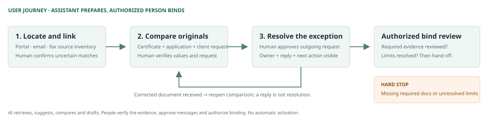

Video: Recording link will be added before final submission.
Clickable prototype: Three-screen binding review workflow
User journey: Workflow and human checkpoints
Online report: Read this submission
Portfolio: Zhihan Liu · Company reference: Ajaia

Marsh & Colby — Find the evidence. Resolve the exception. Then bind.
Zhihan Liu · Digital Product Designer assessment
Task 1 — Synthesis and next questions
Needs, not just features
Priority problem: Assistants need to find the correct documents and move discrepancies toward verified resolution while retaining the familiar checklist. Colin's retrieval effort is directly supported by timing data; the causes of Anika's correspondence delays still need investigation. Human review is a constraint throughout, not a third measured bottleneck.
Evidence labels below identify the supplied material and exact answer/log segment; they are labels added for this submission, not original line numbers.
| Need | Specific evidence | Interpretation and limit |
|---|---|---|
| Find the correct documents across channels without repeatedly hunting through inboxes. | C1: Colin's first answer describes broker email, portal and fax, and searching for loss runs. C3: his final answer identifies finding documents as his bottleneck. LC1: 11 minutes to locate documents versus 3 minutes for the checklist. LC2: 17/54 submissions had off-portal documents; these took longer to locate. | Retrieval is a directly supported priority for Colin. Channel access, document identifiers and version selection still need investigation. Centralization cannot be assumed to remove the entire 11 minutes. |
| Move document discrepancies toward a verified resolution without unnecessary back-and-forth. | A2: Anika's second answer describes back-and-forth email when certificate and application limits differ, with days waiting. LA2: 23/61 submissions had that mismatch. LA3: logged flag-to-reply median was 2.1 days; nine submissions exceeded four days. | Correspondence is a reported pain. The cause of each wait is unknown; clearer requests reducing repeat clarification is a hypothesis. A reply is not necessarily a usable correction. |
| Preserve reliable review against the client's request while retaining the familiar checklist. | A2: Anika says the checklist is familiar and fine. C1: Colin says the checklist goes quickly. C2/LC3: his estimate of about a third with discrepancies is broadly consistent with 19/54 logged coverage-limit mismatches, though the categories are not identical. Situation rule: a required missing document or a limit that differs from the client's request prevents binding. | This is a safety constraint, not a third measured bottleneck. A difference does not establish which document is correct. The authorized request, required-check catalog and binding authority need confirmation. |
Agreement: Colin's account of retrieval being slower than checklist entry agrees with LC1 and LC2. Anika's report of waiting on mismatch emails also agrees with LA3.
Non-agreement in priority: Anika proposes faster checklist entry/autofill (A3), while her reported pain and the log highlight mismatch correspondence and waiting (A2, LA2–LA3). Autofill remains a candidate; her checklist-entry time was not measured, so the evidence cannot establish it as the first priority. Colin's retrieval priority has direct timing support (LC1). This is a priority tension, not a numerical contradiction. Anika's 14 minutes from opening to first flag (LA1) measures a different interval from Colin's 3 minutes completing the checklist; they cannot be directly compared.
Scope of the evidence: Two assistants in two offices, 30 days. The reply-time statistic covers logged replies; its denominator is not supplied, and the pack does not say it covers only the 23 coverage-limit mismatch cases. We do not know full end-to-end binding time, the cause of each wait, or organization-wide prevalence. No time saving has been measured for this proposal.
Four next questions — and what each could change
| Next interview question | Design consequence |
|---|---|
| 1. Both assistants: Show a recent submission with email or fax documents. How did you identify the right submission and the current version? | Reliable identifiers support suggested linking. Ambiguous matches require a human assignment queue; do not auto-file on name similarity alone. |
| 2. Anika and a broker: Walk through a recent discrepancy thread together. What did each side need to proceed, what did each exchange clarify, and what were they waiting for? Which information is routine and which is case-specific? | Missing context supports a structured request with room for exceptions. Waiting for a corrected document or authorization calls for visible dependencies and ownership. If the other party has everything but has not acted, emphasize follow-up. These causes remain hypotheses until observed. |
| 3. Both assistants: When the application and certificate differ, how do you establish the client's authorized requirement and decide which document needs correction? | Add the authoritative request and approval trail to comparison. A difference alone must not trigger an automatic change to either document. |
| 4. Operations and the person authorized to bind: Which documents/checks are required for each policy type, and who signs off the completed packet? | Configure the required-check catalog and role permissions. The final bind action remains blocked for required missing documents or unresolved limits. |
Task 2 — Design the ideal solution
Design hypothesis and journey
Keep the familiar checklist and put its evidence within reach. Source access targets Colin's documented retrieval effort (C1/C3, LC1/LC2). Turning reviewed gaps into specific requests may reduce avoidable clarification for Anika (A2, LA2/LA3); that benefit remains unproven.

Three screens and their decisions
| Screen | User task | AI assistance | Human checkpoint and reason |
|---|---|---|---|
| 1. Documents | Find required originals across portal, broker email and fax. | Suggest source matches and organize available documents. | Inspect submission identity before linking a suggested match, preventing another submission's evidence from entering the review. |
| 2. Review checklist | Check each requirement beside candidate findings and source links. | Prepare candidate values and highlight possible differences. | Open originals and record verified / needs correction / needs clarification. Confirm the current authorized request; neither application nor certificate is automatically correct. Add a review item when AI misses a concern. |
| 3. Follow-up | Inspect a structured request generated from the checklist's open items. | Organize findings, requested actions and sources into an editable draft. | Review the actual message before approving it. Clear issues only after checking new evidence; a reply is not resolution. |
Checklist → structured request
| Human review status | Effect on the draft and readiness |
|---|---|
| Not reviewed | Remains pending and blocks readiness; AI does not invent a reviewer decision. |
| ✓ Verified | Included as context only when useful; no repeated request for that information. |
| × Needs correction | Generates a specific correction or missing-document request with its sources and optional reviewer detail. |
| ? Needs clarification | Generates a question rather than asserting which conflicting value is correct. |
Reviewer-added requirements enter the same flow. Routine fields and wording are candidates to validate against real correspondence; rare requirements still need explicit handling when they affect binding.
The third screen updates automatically from review decisions. If the reviewer has edited the message, later checklist changes preserve those edits and flag the draft for refresh before sending; the previous edited version remains available. There is no second set of generic confirmation boxes.
Normal path: Complete, consistent and verified requirements proceed directly to an authorized bind-review package, without a correction request. Missing or unresolved requirements block readiness, while requests for clarification remain possible. The assistant prepares the package; actual binding authority must be established in research. The prototype never activates a policy.
New evidence: A broker reply supplies an illustrative certificate v2 and request confirmation. Affected authorization and limit reviews reopen; reviewer-added concerns remain unresolved until checked. Reviewed versions travel with the package.
Decisions on Owen's wishlist
| Request | Decision |
|---|---|
| Autofill | Retain source-linked candidate values; prioritize retrieval and verified exception handling over unattended checklist completion. |
| Modern interface | Use a compact source list, review table and request editor. Keep research commentary in the report. |
| AI chat | Defer: neither interview establishes chat as the needed interface. |
| Mobile access | Validate specific tasks and constraints before prioritizing a full mobile workflow. |
Validation and limits
Test comparable tasks with assistants from both offices and the authorized binding reviewer, including an off-portal document, conflicting limits and a new version.
| Need | Observe | Guardrail |
|---|---|---|
| Find correct evidence | Retrieval time and external searches | Wrong submission links or obsolete versions. |
| Reduce avoidable correspondence | First-request omissions, clarification exchanges and flag-to-usable-correction time | Separate waiting causes; a reply alone is not success. |
| Preserve reliable review | Missed discrepancies, unsupported verification and unsafe advancement attempts | Inspect originals, authorization and revised evidence. |
Retain the proposal if retrieval and interpretation improve without increasing missed requirements. Broker platform adoption is not assumed: requests continue through email. Neither reminders nor structured requests are claimed to eliminate days of external waiting.
The prototype uses illustrative documents and deterministic draft generation to demonstrate the interaction. Source ingestion, model accuracy, actual email delivery, permissions, the complete policy-rule catalog and durable records remain production work. Functional checks are not a real-user study or measured business improvement.
Task 3 — AI Workflow Note
I used AI to organize and cross-check the supplied evidence, draft follow-up questions, and implement the interactive prototype. I made the final evidence and scope decisions: prioritize retrieval, retain the familiar checklist, and verify coverage against the client's authorized request. An early AI-generated prototype centered follow-up on a free-form email draft; I changed it so item-level human review decisions generate structured requests with sources. I retained intelligent checklist assistance for evidence preparation and coordination, without treating autofill as a proven top priority or AI output as verified evidence. People can edit and approve the message, and must recheck new evidence before clearing issues; these proposed benefits remain unvalidated.
Evidence reference key
| Label | Location in the supplied pack |
|---|---|
| A2 / A3 | Material 1, Anika: answers to “most annoying part” / “wave a wand.” |
| C1 / C2 / C3 | Material 2, Colin: normal binding / mismatch frequency / catching mismatches. |
| LA1 / LA2 / LA3 | Material 4, Anika: opening-to-first-flag / mismatch count / logged broker-reply interval. |
| LC1 / LC2 / LC3 | Material 4, Colin: retrieval and checklist time / off-portal documents / mismatch count. |
| Situation rule | The situation, definition of binding and its two stated hard stops. |